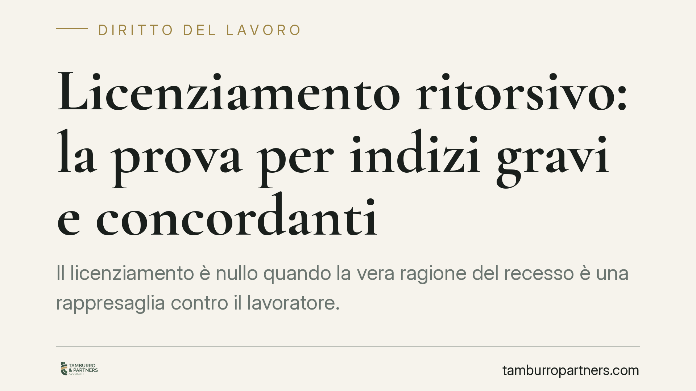

Licenziamento ritorsivo: la prova per indizi gravi e concordanti
Il licenziamento è nullo quando la vera ragione del recesso è una rappresaglia contro il lavoratore. La giurisprudenza consolidata ammette che questa natura ritorsiva possa emergere da indizi gravi, precisi e concordanti, senza pretendere una prova diretta. La sproporzione tra addebito contestato e sanzione espulsiva è tra gli elementi più significativi in questa valutazione.

Che cos'è il licenziamento ritorsivo
Il licenziamento ritorsivo è il recesso datoriale che nasconde, dietro una motivazione formale apparentemente legittima, un intento di rappresaglia contro il lavoratore. Tipicamente reagisce a un comportamento lecito del dipendente: una rivendicazione retributiva, una denuncia, la partecipazione all'attività sindacale, una testimonianza in giudizio.
La distinzione decisiva è quella tra motivo dichiarato e motivo reale. Sulla carta il datore invoca un addebito disciplinare o una ragione organizzativa; nella sostanza, la causa determinante ed esclusiva del provvedimento è la volontà di punire il lavoratore. Quando ricorre questa condizione, il licenziamento è nullo.
Inquadramento normativo
La base giuridica è l'art. 1345 del Codice civile, secondo cui il contratto (e per estensione l'atto unilaterale di recesso) è illecito quando le parti si sono determinate a concluderlo esclusivamente per un motivo illecito comune. Trasposto al licenziamento: il motivo ritorsivo deve essere l'unica ragione effettiva del recesso, non una tra più concause.
Qui sta la difficoltà probatoria: il datore non dichiara mai la finalità ritorsiva. Interviene allora l'art. 2729 c.c., che ammette la prova per presunzioni. Il giudice può risalire dal fatto noto al fatto ignoto quando gli indizi disponibili sono gravi, precisi e concordanti. Non serve una confessione né un documento che espliciti l'intento punitivo: è sufficiente un quadro indiziario coerente che renda la spiegazione ritorsiva più plausibile di quella formale.
È un principio ormai consolidato nella giurisprudenza di legittimità in materia di lavoro. Le pronunce più recenti ne confermano la stabilità, ribadendo che l'onere di dimostrare l'intento ritorsivo grava sul lavoratore, ma può essere assolto anche in via presuntiva.
> Nota: eventuali estremi di singole ordinanze citate nel dibattito divulgativo vanno sempre verificati alla fonte ufficiale prima di essere utilizzati in un atto.
La sproporzione tra addebito e sanzione come indizio
Uno degli elementi più valorizzati dai giudici è la sproporzione tra la gravità dell'addebito e la severità della sanzione. Se a fronte di una mancanza lieve, isolata o mai contestata in precedenza il datore reagisce con l'espulsione, questa reazione eccessiva diventa essa stessa un indizio.
Il ragionamento è intuitivo: un provvedimento manifestamente sproporzionato lascia intravedere che l'addebito è un pretesto, e che la vera spinta al recesso va cercata altrove. La sproporzione non prova da sola la ritorsione, ma si somma agli altri indizi — la vicinanza temporale rispetto a una rivendicazione del lavoratore, il mutamento improvviso di atteggiamento del datore, l'assenza di precedenti disciplinari — fino a formare un quadro grave, preciso e concordante.
Implicazioni pratiche
Le conseguenze sono speculari per le due parti del rapporto.
Per il lavoratore. La nullità del licenziamento ritorsivo comporta la tutela più forte: reintegrazione nel posto di lavoro e risarcimento. Non è indispensabile una prova documentale diretta dell'intento punitivo; occorre però costruire con cura il quadro indiziario, raccogliendo e conservando tutto ciò che collega temporalmente e logicamente il recesso al comportamento lecito che si assume punito.
Per il datore di lavoro. Un licenziamento disciplinare o organizzativo debolmente motivato, e soprattutto sproporzionato rispetto al fatto contestato, espone al rischio concreto di riqualificazione in senso ritorsivo. La solidità della contestazione, la proporzione della sanzione e la coerenza dell'intera vicenda diventano il primo presidio difensivo.
Cosa fare in concreto
- Impugnare nei termini. Ai sensi dell'art. 6 della L. 604/1966, impugnare il licenziamento per iscritto entro 60 giorni dalla ricezione della comunicazione; entro i successivi 180 giorni depositare il ricorso giudiziale oppure attivare la conciliazione o l'arbitrato. Il mancato rispetto anche di un solo termine rende l'impugnazione inefficace.
- Documentare la sequenza temporale. Ricostruire la cronologia tra il comportamento lecito del lavoratore (rivendicazione, denuncia, testimonianza) e il recesso, conservando email, comunicazioni e testimonianze.
- Valutare la proporzione. Verificare se la sanzione espulsiva è coerente con la gravità dell'addebito e con eventuali precedenti disciplinari.
- Raccogliere gli indizi. Individuare elementi ulteriori — mutamenti di trattamento, dichiarazioni, tempistiche sospette — che, sommati, possano assumere valenza presuntiva.
- Analizzare preventivamente la contestazione. Per il datore, è opportuna una valutazione preventiva della solidità dell'addebito e della proporzione della sanzione prima di procedere al recesso.
---
*Contributo informativo a cura di Tamburro & Partners - Avv. Giuseppe Tamburro. Non costituisce parere legale.*
Ogni storia di lavoro ha i suoi tempi.
Se gestisci HR e vuoi un confronto su contenzioso, ispezioni o licenziamenti, scrivi allo studio. Ti rispondiamo entro un giorno lavorativo.